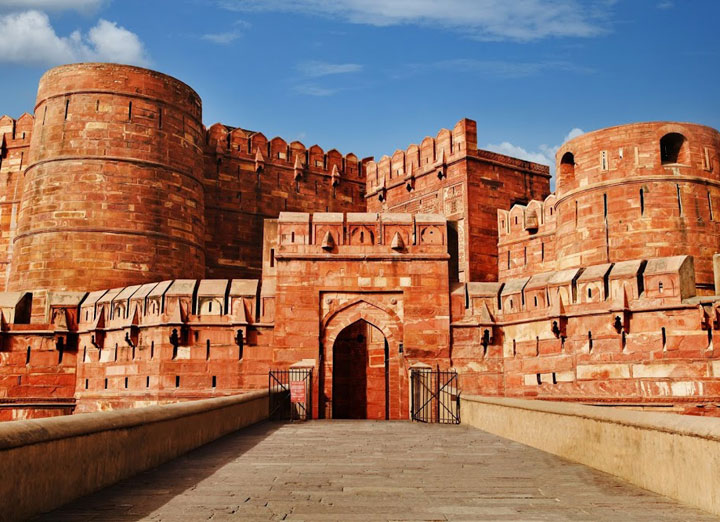

Featured Heritage Sites

Taj Mahal
Built Year: 1632–1653 AD
Place: Agra, Uttar Pradesh
Location: 27.1751° N, 78.0421° E
Package Price: $100
Darshan Tickets: Available from $10
Best Route: Fly to Agra Airport, then taxi to the site.

Agra Fort
Built Year: 1565–1573 AD
Place: Agra, Uttar Pradesh
Location: 27.1795° N, 78.0211° E
Package Price: $80
Darshan Tickets: Available from $8
Best Route: Fly to Agra Airport, then taxi to the site.

Fatehpur Sikri
Built Year: 1571–1585 AD
Place: Fatehpur Sikri, Uttar Pradesh
Location: 27.0937° N, 77.6614° E
Package Price: $90
Darshan Tickets: Available from $9
Best Route: Train to Fatehpur Sikri Station, then taxi.